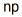
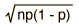
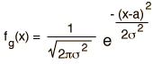

Comparison of Distribution Functions
| Distribution | Functional Form | Mean | Standard Deviation |
Binomial |  |  |  |
Gaussian |  |  |  |
Poisson |  | |  |
Note!
The binomial distribution is the exact probability, so the above comparison can serve to check on the conditions under which the Gaussian and Poisson distributions are good approximations to it. If you substitute numbers, you will find that the Poisson is a good approximation if the probability p is small and the number of events n is large. If the number of events is large and the probability is also sizable, then the Gaussian will be a better approximation.Distribution functions